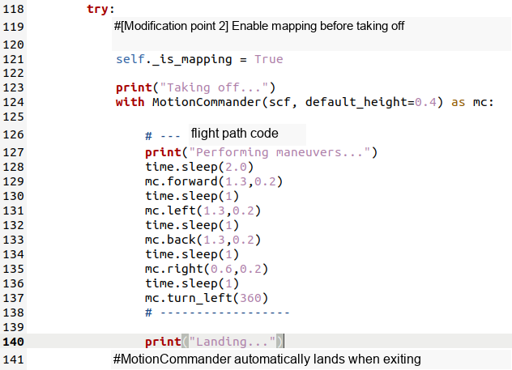
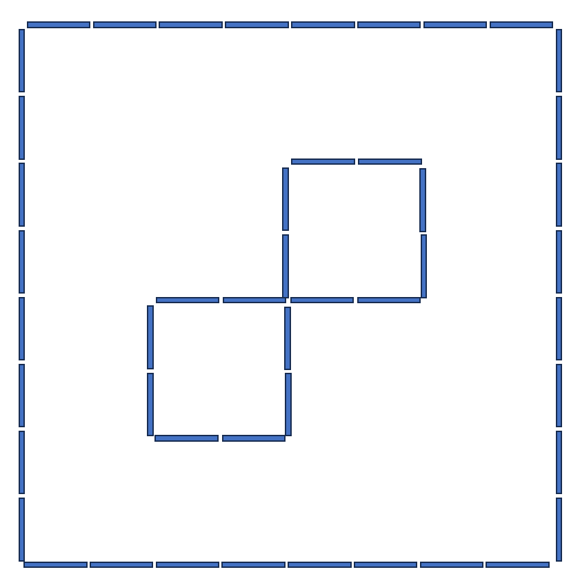

Experiment 7: Autonomous Mapping and Review
Experimental goals
In the pre-experiments, students have already experienced controlling drones for mapping. In this lesson, you will further write predetermined code to allow the drone to fly autonomously and model complex map environments.
At the same time, this class will also help everyone review the learning content in the first three days and prepare for the comprehensive project presentation task.
Experiment preparation
The virtual machine system of the client connected to the drone has been configured previously. And you need to have the Linux system operating experience accumulated in the previous experiments. A little more basic python programming is needed.
Hardware equipment needed in this experiment:
* Crazyflie 2.0
* Crazyradio PA
* Flow deck
* Multiranger deck
Experimental steps
This experiment will mainly run python scripts. All programming library calls come from the official website tutorial: User Guide | Bit Boom
If you encounter some difficulties during the experiment, you can also click on the above URL for further reference. At the same time, some operations and knowledge points are also mentioned in the experiment manual of the previous class. If you have any questions, you can refer to the experiment manual of the previous section. This part of the operation will not be repeated in this experiment manual.
Experiment: Autonomous mapping
First, attach the code for this experiment, auto_multiranger_pointcloud.py.
A motioncommander is instantiated in the middle part of the code. The students modified the code at lines 128 to 137 in the illustration, and used the previously learned programming knowledge of motioncommander to write their own code to control the autonomous flight of the drone.
Note that if you want the quality of the point cloud mapped by the drone to be high, it is recommended to slow down the speed of the drone to 0.2m/s or lower. Pay attention to the orientation of the front of the drone's head. Every time it passes some turning points, the direction and angle of the drone's steering need to be considered.

The experimental site for this lesson is as follows. Try to use this program to let the drone fly autonomously to create a clear point cloud of this map.

review
Dear students, the first three days of practice in this summer school have entered the comprehensive finishing stage. This class no longer adds a large number of new experiments, but encourages everyone to review the content they have learned before, check for missing links and fill in the gaps that they are not familiar with, and prepare for the subsequent comprehensive project presentation.
This class will also package and organize the experimental manuals and codes used in the first three days for everyone to continue debugging and reviewing. Students can recall what they have learned in this summer school, such as:
How to run a linux virtual machine on a windows computer?
Basic operations of Linux system
Basic information about Crazyflie drone
How to set up the operating environment of crazyflie drone on Linux system?
Use of the basic programming library of Crazyflie drone
Sensor principles and applications of Crazyflie drone
Basic theory of autonomous drone exploration
List the above knowledge points for your inspiration
The subsequent comprehensive project exhibition will be carried out in a practical manner, and students are expected to implement the learned theories into operational drone missions. The display content will be divided into a creative section and a racing section. The specific tasks come from the knowledge points covered in the experiment manual in the first three days; completing the basic tasks can meet the display requirements, and the team with better results will receive a higher evaluation.